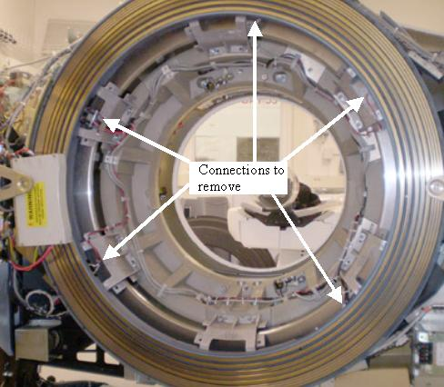
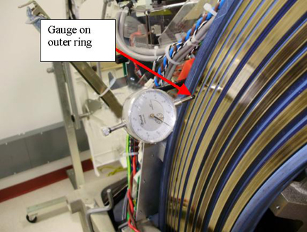

Operating Documentation
Direction 5193574-800, Rev# 22
LightSpeed 7.X Service Methods
Module Version 1.0, Version Date 10/28/08
Operating Documentation |
| Required Persons | Preliminary Reqs | Procedure | Finalization |
|---|---|---|---|
| 3 | Not Applicable | 5 hours | 1 hour |
This procedure describes the Slip Ring Platter replacement.
| Last Revised: | October 13, 2008 |
| Item | Qty | Effectivity | Part# | Manufacturer | |
|---|---|---|---|---|---|
| FE torque wrench set | 1 | - | 5133203 or equivilent | - | |
| Magnetic base dial indicator | 1 | - | 46-194427P46 or equivilent | - | |
| Standard FE Tool Kit | 1 | - | - | - | |
| Installation Support Kit (ships with system) | 1 | - | - | - | |
| Item | Qty | Effectivity | Part# | Manufacturer |
|---|---|---|---|---|
| Tie-wraps and pads | - | - | - | |
| Hand towels and cleaners, for cleanup | - | - | - | |
| Gloves (included in installation support kit) | - | - | - |
| Item | Qty | Effectivity | Part# | Manufacturer | |
|---|---|---|---|---|---|
| VCT Slip Ring Platter assembly | 1 | - | 5191466 | - | |
| ||||
| Electrocution hazard | ||||
| High Voltage present. | ||||
| Use proper lockout/tagout procedures before replacing components. See safety menu of Service Document gui for appropriate procedures. |
| ||||
| SEVERE INJURY CAN RESULT. | ||||
| THE SLIP RING AND CAST MOUNTING BRACKETS WEIGH ABOUT 150 lb (68 kg). | ||||
| Three (3) PEOPLE MINIMUM ARE NEEDED TO REMOVE THIS ASSEMBLY. |
| ||||
| Potential for Injury. | ||||
| A Ladder May be Required to Perform this Procedure. | ||||
| Follow All Ladder Safety Rules. |
| ||||
| Follow ALL required safety and PPE procedures customary for your organization when working on this product. | ||||
| NOTE: | Some steps may require service in blind areas. |
| Condition | Reference | Effectivity |
|---|---|---|
Only trained service personnel should service the GE CT Scanner. | - | - |
Gantry rotated to a position that offers the best service access, before turning off gantry 120/ 208 VAC. | - | - |
Remove Gantry side, top and rear covers.
Refer to Replacement → Gantry → Enclosure → (Cover Removal Procedures).
Remove Slip Ring safety covers.
| NOTE: | (For CT/PET Discovery System) The CT Gantry tilt hardware is removed when combined with a PET system, so the Gantry tilt function does not apply. Disregard requests for Gantry tilt in this procedure. |
Tilt Gantry forward to +30 degrees. This helps with positioning the new ring as it lessens the weight to hold while installing the ring and checking alignments.
| ||||
| Electrocution hazard | ||||
| High Voltage present. | ||||
| Use proper lockout/tagout procedures before replacing components. See safety menu of Service Document gui for appropriate procedures. |
Completely shut down system power. (A1, Lockout/Tagout)
Remove rear cover mounting brackets, both sides. Three (3) 12mm bolts on each mount.
Remove brush block, see Slip Ring Brush Block Replacement for details. A new brush block comes with the ring.
Remove all wiring tie-wraps on the Ring inside diameter to allow removal of the ring and 6 mounting brackets.
Illustration 1: Slip Ring Cabling

Disconnect all cables from Slip Ring.
Disconnect cables and remove Receiver antenna bracket with antenna assembly.
| NOTE: | Follow this procedure EXACTLY. Do not take shortcuts. Both axial and radial runout as well as Gantry balance are at stake. |
Rotate Gantry so the Tube is in 12 o'clock position. This puts the signal interface board on the backside of the ring at 12 o'clock and the transmitter at 4 o'clock when looking from the back of the gantry.
Engage axial rotating lock to prevent Gantry rotation.
Mark Slip Ring, Slip Ring cast mounting brackets, and rotating casting with numbers 1 through 6.
Start at 12 o’clock and write “1” on all three surfaces. See Illustration 2.
Continue clockwise with the next mount with number 2. Do this for all remaining mounts.
This will ensure everything will be installed in the same locations.
Illustration 2: Slip Ring bracket locations

Open new Slip Ring box. Put on the gloves.
Place top cover of the box on the floor foam side up.
Flip the new Slip Ring over in the box, so that brass rings are face down.
Install the new signal PCB.
Install the new transmitter.
Torque the Signal PCB and Transmitter screws to:
Table 1: Signal PCB and Transmitter Torque
| 1 N-m | NA lb-ft | 9 lb-in | 10 kg-cm |
Illustration 3: Slip Ring components

On the Gantry, remove all twelve (12) 12 mm bolts securing the cast mounting brackets to the rotating casting.
Leave the bolts at the 12 o'clock position for last.
| ||||
| SEVERE INJURY CAN RESULT. | ||||
| THE SLIP RING AND CAST MOUNTING BRACKETS WEIGH ABOUT 150 lb (68 kg). | ||||
| Three (3) PEOPLE MINIMUM ARE NEEDED TO REMOVE THIS ASSEMBLY. |
| NOTE: | Remember there are three (3) mounts with pins, so pull ring straight off. Use a flat-blade screwdriver to separate the brackets from the rotating casting if necessary. The pins are primarily for positioning, not for holding entire weight of the ring. |
After removing the last bolts, carefully remove Slip Ring and cast mounting bracket assembly.
Place the old ring, brass side down, on top of foam cover.
Align the signal PCB with the replacement ring to simplify the transfer of the cast mounting brackets to the new Slip Ring.
| NOTE: | Inspect all interfaces for burrs, debris, or other imperfections. These items can result in runout failures, requiring a repeat of this entire procedure. |
Transfer each of the cast mounting brackets one at a time. Ensure these brackets are installed in the same position from old to new Slip Ring.
Place cast mounting bracket number 1 on the new Slip Ring aligning the 6 mm pin in the slot.
There are four (4) holes that attach the cast mounting bracket to the Slip ring. The hole diagonal from the pin is 6.2 mm. The other three are 7 mm. The 6.2 mm hole and 6 mm pin are to help align the ring.
Place the 6 mm bolt in the 6.2 mm hole and align over Slip ring insert.
Gently pull or push the cast mounting bracket radially out (away from isocenter). Use the pin slot as the stop and the 6.2 mm hole for alignment.
Tighten the 6 mm bolt until the lock washer starts to compress. Just tighten (snug) enough so that bolts are engaged.
Install the other three (3) 6 mm bolts and hand tighten until they are seated on the casting.
Torque the bolts to the following using the pattern defined by Illustration 4:
Table 2: 6mm Bolt (Bracket to Slip Ring) Torque
| 7.9 N-m | 5.8 lb-ft | 70 lb-in | 80 kg-cm |
Illustration 4: Bolt Torque Pattern

Repeat for all six (6) cast mounting brackets.
Align new slip ring and cast mounting brackets with the rotating casting.
Ensure marked numbers are aligned, 1 to 1, 2 to 2 etc.
Align guide pins with holes on each of the three (3) cast mounting brackets to rotating base.
Push until seated. Maintain pressure against the ring and hand tighten all 12 mm bolts. The alignment pins are not designed to hold the ring in place, just to position it.
Release axial rotational lock.
Rotate Gantry by hand as needed to ease access to slip ring mounting bolts.
Torque the 12 mm bolts on each mounting bracket (bracket to gantry) as follows:
Start with bracket location # 1 (see Illustration 5) and set the torque on the two (2) 12 mm bolts to the setting defined in Table 3:
Repeat for cast mounting bracket # 2 through # 6 in order.
Table 3: 12mm Bracket to Gantry Bolts (2 per bracket)
| 66.4 N-m | 49 lb-ft | 587.7 lb-in | 677 kg-cm |
Illustration 5: slip ring Platter Torque Pattern

Connect the filters, wiring harnesses and ground clamps to the slip ring.
Mount and adjust the Dial Indicator so that the plunger tip rides on the blue edge next to the RF transmission ring.
Radial runout is making sure the RF transmission ring is at the same distance from isocenter during rotation. Also can be thought of as making sure the distance from the RF ring to the receiver is constant during rotation.
Illustration 6: Gauge mount example

Rotate the Gantry by hand and measure the Radial Runout. Radial runout should not exceed .0319 inches (32 mils, 0.81 mm).
If the Radial Runout is out of specification perform the following steps.
Identify the “High” and “Low” physical locations on the slip ring.
With the gantry tilted forward + 30 degrees, place the “High” location at 12 o’clock.
Loosen-do not remove-the four (4) 12 mm bolts on each of the six (6) cast mounting brackets.
Physically lift/push/pull the ring to release binding tension. (At + 30 degree tilt, gravity effects are minimized)
If any adjustments were made, re-torque bolts per the following table. Tightening sequences must be followed for desired results. (See Illustration 5)
Table 4: 12mm Bracket to Gantry Bolts (2 per bracket)
| 66.4 N-m | 49 lb-ft | 587.7 lb-in | 677 kg-cm |
Adjust the Dial Indicator and place the plunger tip directly on the brass surface of ring 12 (outer most ring).
Axial runout is primarily making sure the distance from the gantry to the RF ring is consistent. Do not want the RF ring to wobble side to side with respect to the receiver. This also limits the movement of the brass rings with respect to the slip ring brushes.
Illustration 7: Gauge mount example

Rotate the Gantry by hand and measure the Axial Runout. Axial runout should not exceed .0327 inches (33 mils, 0.83 mm).
If the Axial Runout is out of specification perform the following steps. This procedure will first loosen and retighten the mounts in case a mount was not seated properly and then shim a mount if necessary.
Identify the “High” and “Low” physical locations on the slip ring.
With the Gantry tilted forward + 30 degrees, place the “Low” location at 6 o’clock.
Loosen - do not remove - the four (4) 12mm bolts on each of the six (6) cast mounting brackets.
Physically lift/push/pull the ring to release binding tension. (At + 30 degree tilt, gravity effects are minimized)
If any adjustments were made, re-torque bolts per the following table. Tightening sequences must be followed for desired results. (See Illustration 5)
Table 5: 12mm Bracket to Gantry Bolts (2 per bracket)
| 66.4 N-m | 49 lb-ft | 587.7 lb-in | 677 kg-cm |
Recheck the axial runout and perform the following if still out of specification (should not exceed .0327 inches (33 mils, 0.83 mm)).
Inspect the one (1) or two (2) closest cast mounting brackets for proper seating at both the slip ring and rotating casting interfaces.
All bolts should be properly torqued.
No gaps greater than .005 inches (0.127 mm) at any interface edge.
Correct any “High” gaps greater than .005 inches (0.127 mm) at any interface edge.
Recheck both Radial and Axial runout.
Using standard notebook paper (0.003 inches (0.076 mm) thick nominal) make shims for one (1) or two (2) mounting locations on either side of the “Low” location.
A single sheet folded in half when compressed will be 0.005 inches (0.127 mm) nominal.
Loosen the four (4) 6 mm bolts at the cast mounting bracket to slip ring interface (back side of the ring).
Remove the 2 outer diameter bolts and slide shim between the slip ring and cast mounting bracket to block the two (2) outside diameter holes.
Carefully puncture, remove, trim and reinstall shim.
Install the 6mm bolts and snug all 4 bolts. Since torque can not be applied with the slip ring installed, tighten the bolts 1/4 turn past snug.
Repeat this procedure as needed.
| NOTE: | If you need to shim more than two (2) locations, there
is something else wrong. Remove and disassemble the slip ring assembly per Remove the Old Slip Ring. Inspect all contact points for burrs, debris or other obstructions causing runout failures. |
Route and secure all cabling to the Slip Ring as shown in the following illustrations. (5 connections)
Do NOT pull cables tight around corners of the casting or mounting brackets. This may cause a short due to wear later.
There is a threaded hole in the casting behind the collimator. This is for the gantry balance trial weight. Make sure cable routing allows the trial weight to still be installed if needed at a later date.
Torque connections to the following:
Table 6: Slipring connection torque
| 4 N-m | 3 lb-ft | 35 lb-in | 41 kg-cm |
Illustration 8: Slip Ring Harnessing AC Power

Illustration 9: Slip Ring Harnessing Transmitter connections

Illustration 10: Slip Ring Harnessing AC and HV connections

Illustration 11: Slip Ring Harnessing Signal PCB connection

Install Antenna/Receiver assembly. Reference Dual Channel Fiber Rx Replacement.
Install brush block assembly. Reference Slip Ring Brush Block Replacement
Install slip ring safety covers.
Install the Cover mount brackets.
Install gantry covers.
Refer to Replacement → Gantry → Enclosure → (Cover Removal Procedures).
Restore power to system.
Perform a [Gantry Rotation safety check] from the [Functional Checks] folder of the service manual.
Perform a Gantry Balance Check.
Acquire an axial scan: (120kV/80mA, 0.5 sec. Scan)
Acquire one helical scan: (120kV/40mA, 30 sec. Scan)
Verify NO increase in LSCOM errors.
Verify NO increase in corrected or uncorrected FEC errors.
Perform the Quality Assurance Test.